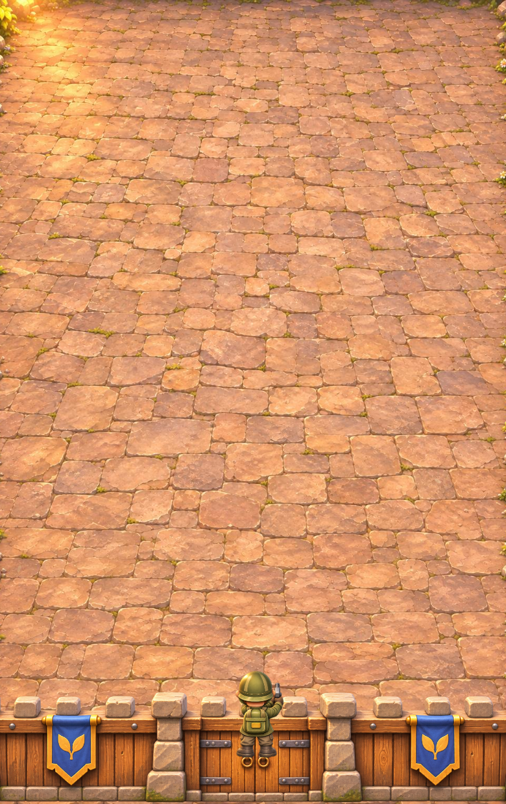
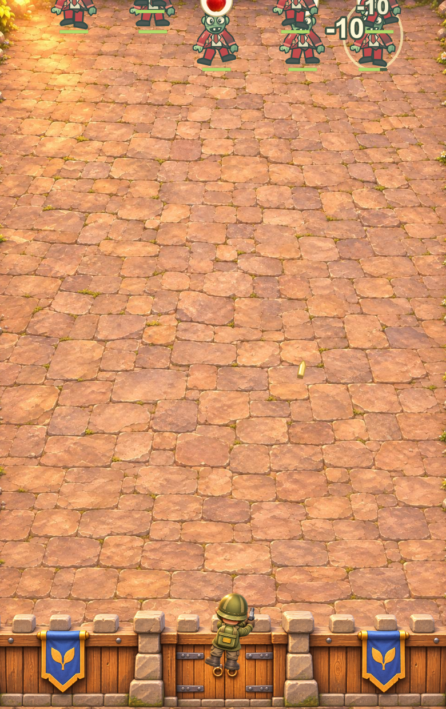
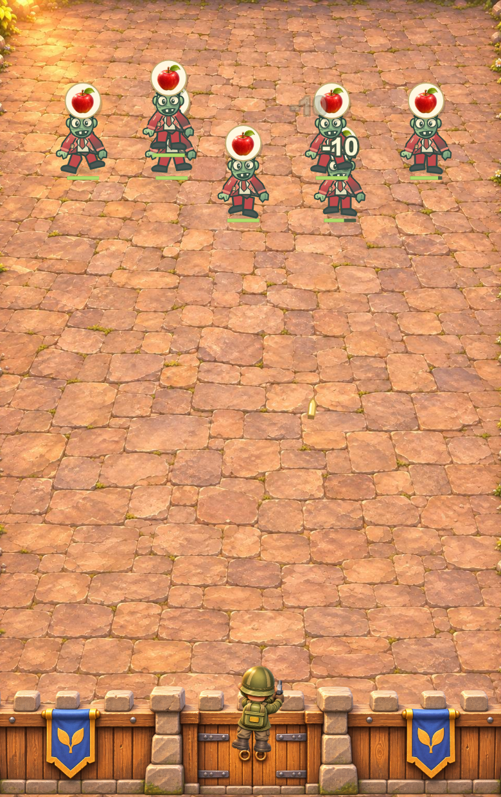
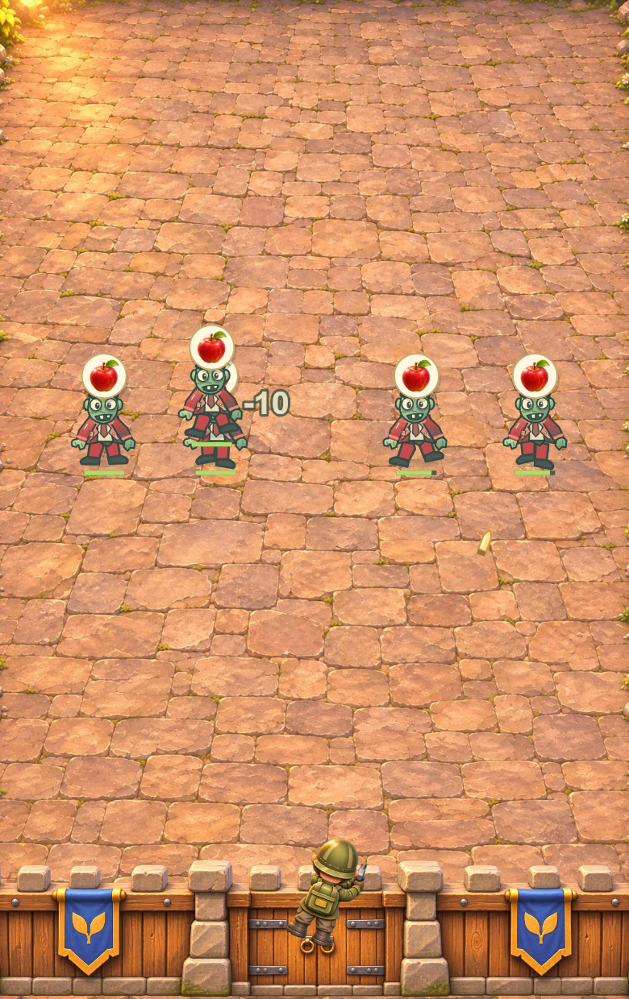
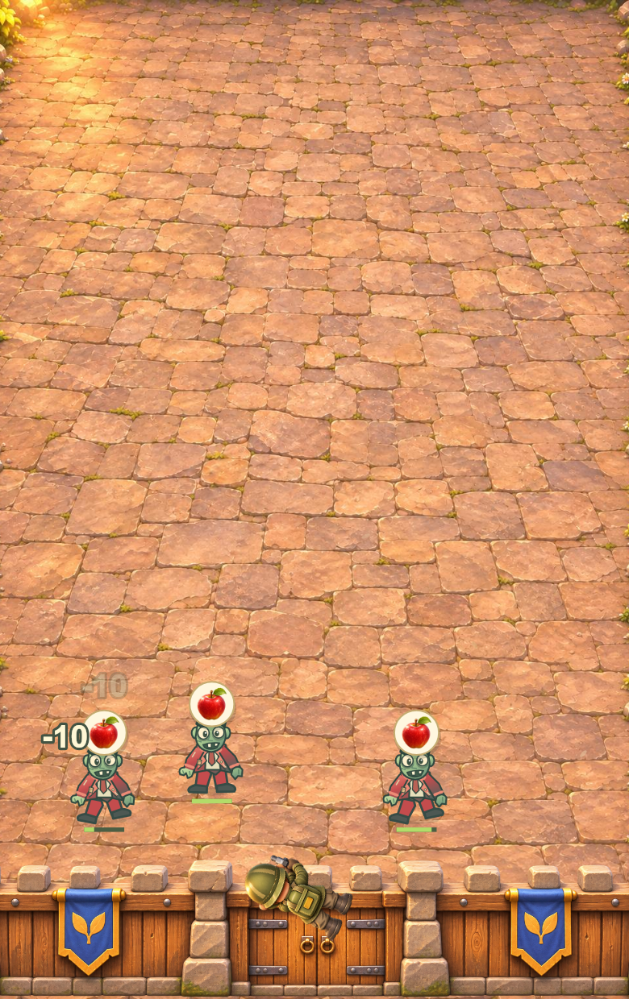
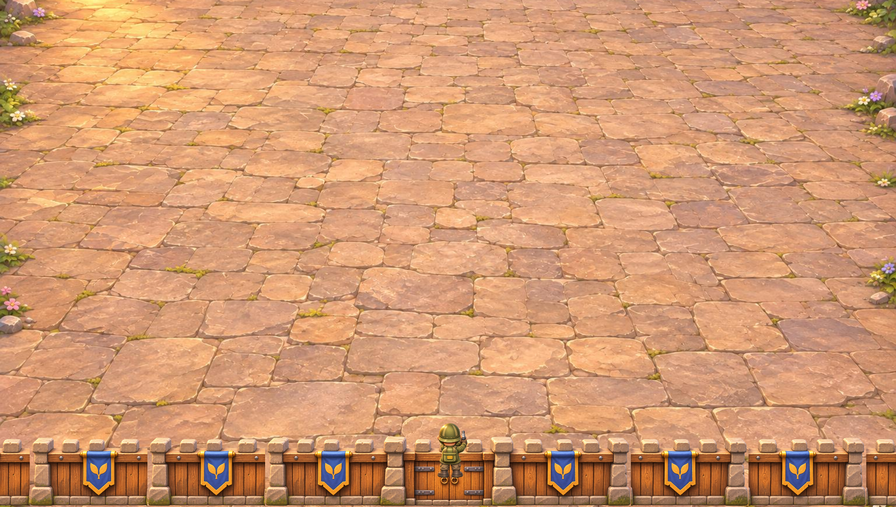
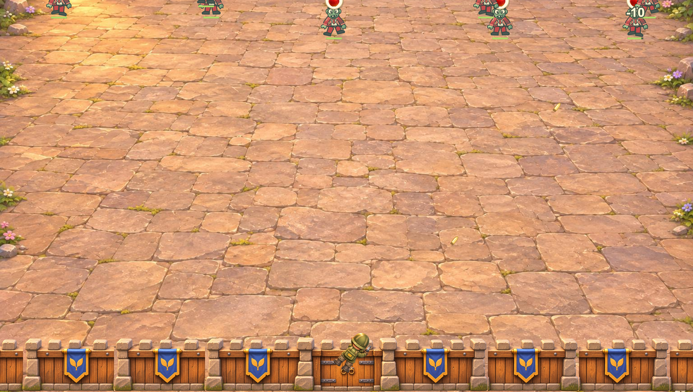
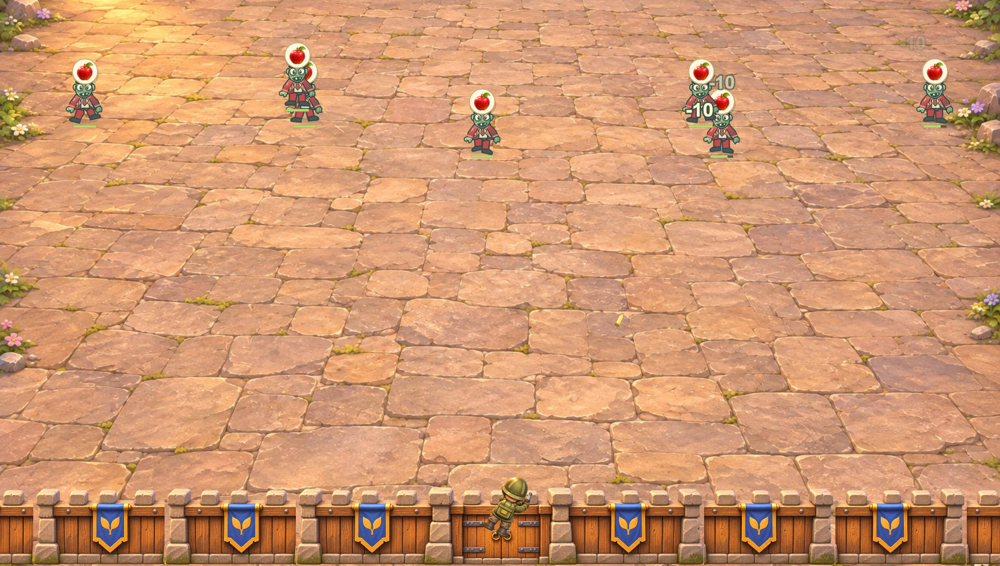
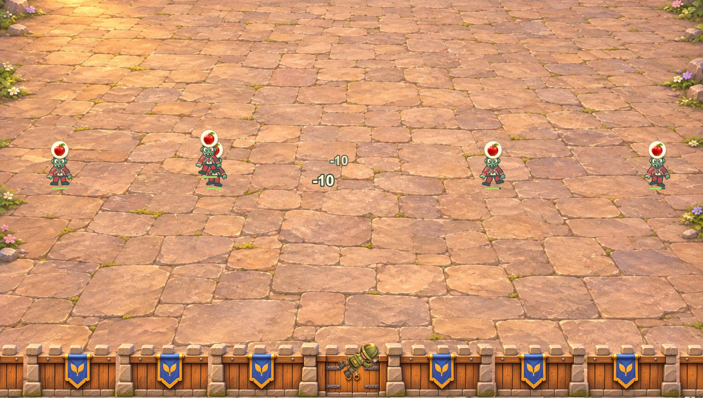
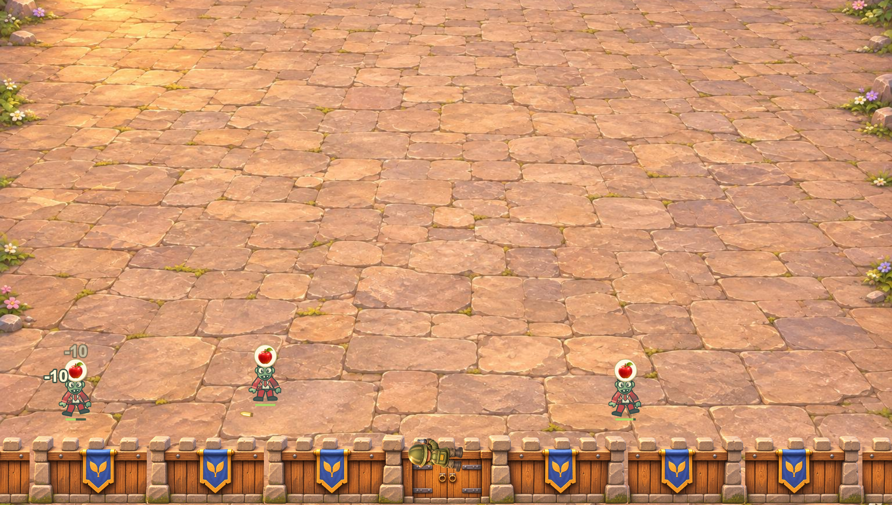

phone · 390×620 · DPR 2
34.17秒 · 8只自然入场 · 最终状态 cleared · 堡垒生命 940
原始DPR 2关键帧










第一关、普通难度、一级武器和堡垒，无技能和宠物。手机与平板共用种子，使用正式出怪工厂与Canvas帧循环；未摆放敌人、修改血量或注入攻击事件。1倍速、30fps、DPR 2。仅为首轮战斗离屏回放，不含听词、升级面板、音频及后续轮次，不是微信或真机录屏，也不代表混战、Boss、完整通关或性能验收。
审查重点：上方自然入场、实际交战密度、枪口与弹道、主角与墙体的遮挡关系，以及旧怪物与新庭院的材质差异。整场美术仍待整改及用户确认。
34.17秒 · 8只自然入场 · 最终状态 cleared · 堡垒生命 940





35.47秒 · 8只自然入场 · 最终状态 cleared · 堡垒生命 930




